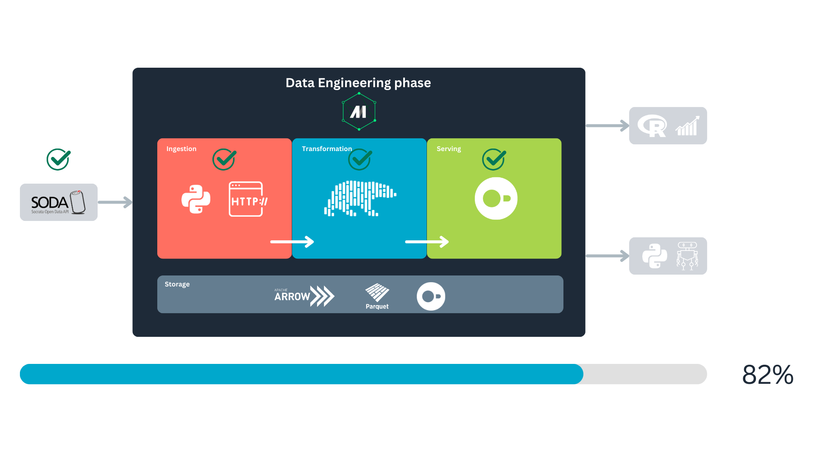
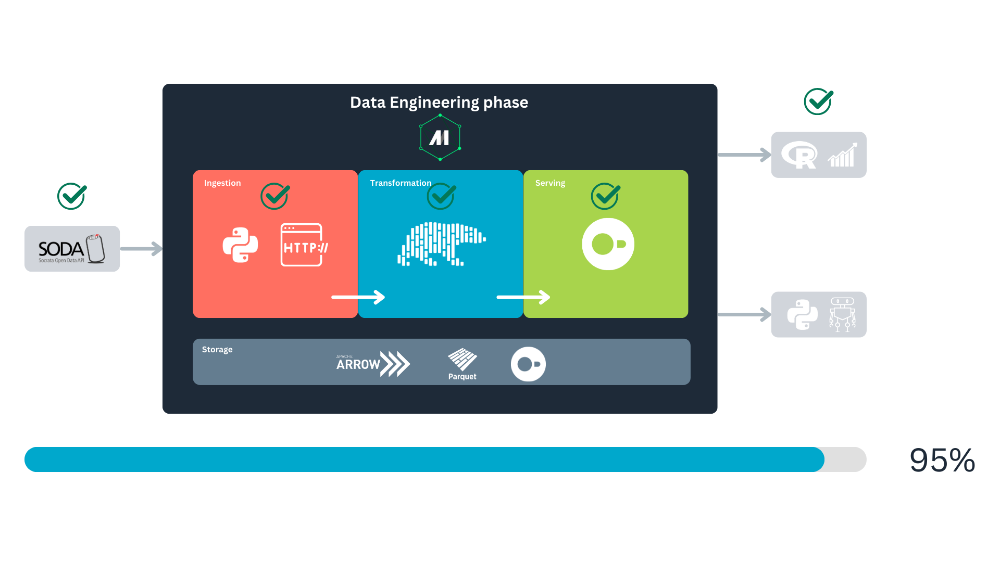
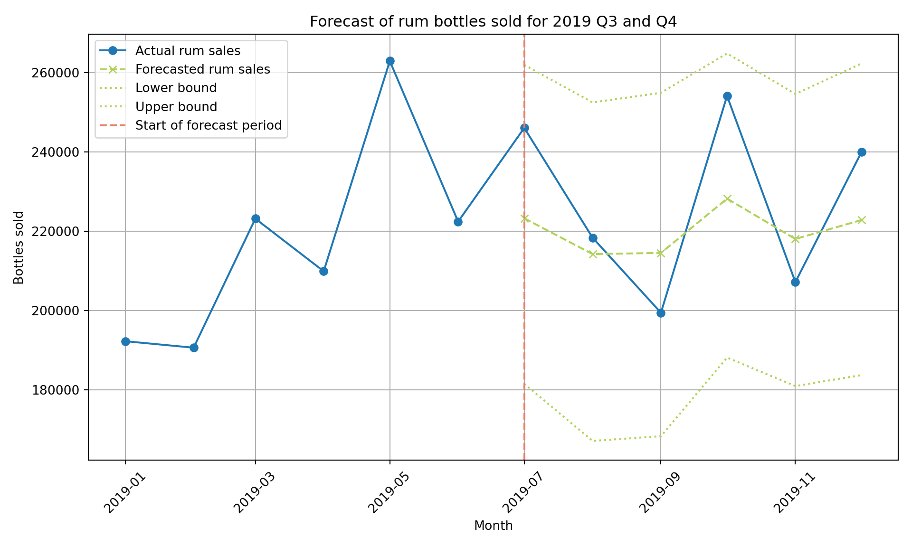
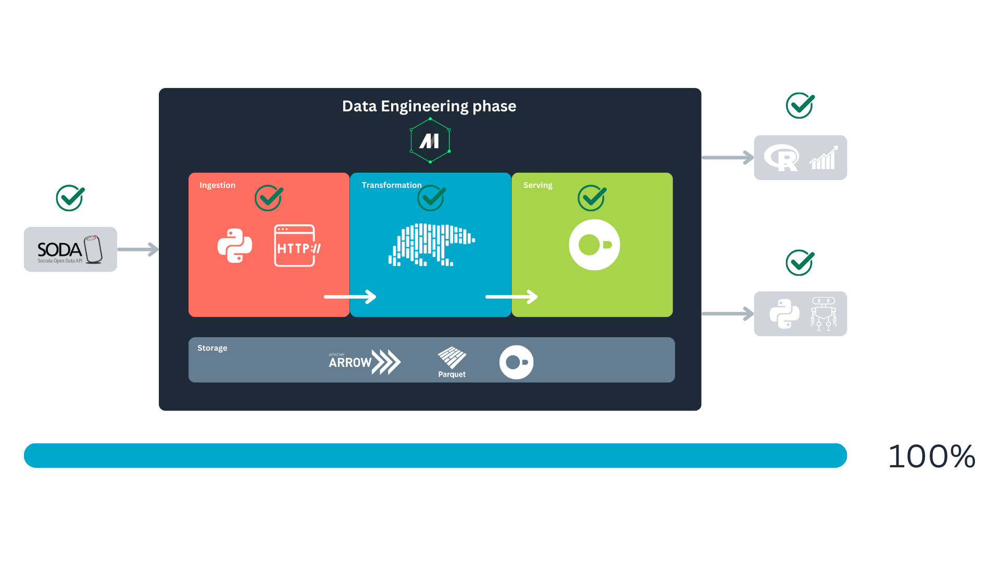

Building a data pipeline with Mage, Polars, and DuckDB
GitHub Repo: SODA to DuckDB

Where are we in the data lifecycle?
As data analysts or scientists, we often find ourselves working downstream in the data lifecycle. Most of the time, our role involves transforming and analyzing data that has already been prepared and served to us by upstream processes. However, having a deeper understanding of the entire data pipeline—from ingestion to transformation and storage—can empower us to optimize workflows, ensure data quality, and unlock new insights.

Another advantage of gaining understanding—and hands-on experience—in data engineering processes is the empathy we build with our data engineers. These are the colleagues we work closely with and rely on, making a strong, collaborative relationship essential. Hence, in this hands-on article, we will explore the Python ecosystem by examining tools such as Mage, Polars, and DuckDB. We’ll demonstrate how these tools can help us build efficient, lightweight data pipelines that take data from the source and store it in a format that is well-suited for high-performance analytics.
About the tools
In this project, we will use Mage as our data orchestrator. The tasks the orchestrator manages will include data fetching, manipulation and transformation using Polars, and persistent storage with DuckDB.
What are data orchestrators?
Data orchestrators, such as Mage, are tools that help manage, schedule, and monitor workflows in data pipelines. They allow us to automate complex processes, ensuring that tasks are executed in the correct order and dependencies are handled seamlessly. By using Mage as our orchestrator, we can streamline our data pipeline and focus on building efficient workflows that allow us to set a local database appropriate for our analysis.
Data manipulation and storage
Why Polars and DuckDB? The answer lies in the size and nature of the dataset we’re working with. Since our dataset is small enough to fit in memory, we don’t need a distributed system like Spark. Polars, with its fast and memory-efficient operations, is perfect for data manipulation and transformation. Meanwhile, DuckDB provides a lightweight, yet powerful, SQL-based engine for persistent storage and querying. Together, these tools offer a simple, performant, and highly efficient solution for handling our data pipeline.
Returning to the data lifecycle diagram, we can land it in a more concrete way to show how our project will be built and executed:

First, we will fetch the data from the Socrata Open Data API (SODA) through HTTP. After that, we will generate some extra variables of our interest with Polars, to finally store it in a DuckDB database. We will consume this database for analytics and predictive modeling. All this is orchestrated with Mage.
Tools and resources overview:
- SODA API: provides access to open datasets, serving as our data source. It contains “a wealth of open data resources from governments, non-profits, and NGOs around the world1.”
- Mage: the data orchestrator that will automate and manage the pipeline.
- Polars: a high-performance data frame library implemented in Rust, ideal for fast data manipulation.
- DuckDB: a columnar database system designed for efficient analytics and in-memory processing.
We’ve chosen the Iowa Liquor Sales dataset since it is big enough to make this ETL (extract, transform, load) pipeline interesting.
Our problem
Let’s say we work for a big chain of liquor stores located in the US, Iowa. Part of the intelligence in your company is built upon the information made available through SODA API, and it feeds some of the dashboards the decision-makers consume. You also use it often to do research and predictive modeling. Some stakeholders have started complaining about the loading times of the dashboards, and you have also been a little frustrated with the time it takes to get the data to train your predictive models.

To continue building our situation, let’s imagine the year 2020—when the term “data engineer” was not as popular as it is today. You’ve just been hired as a data analyst2, and according to Google Trends, the term “data engineer” was only half as popular as it is now. Moreover, a closer look at the trend data from 2020 reveals that most searches for this term originated in tech hubs like California or Washington rather than in states like Iowa.
At this point, you know you are on your own to optimize this process3. And you already have a clear outline for this process:
- Pull the data from the API.
- Generate the variables that provide the most valuable insights for the team️.
- Store the data in a location that allows for easy and fast retrieval .
This brings us to our current challenge: finding a more agile and efficient way to make the SODA liquor sales data accessible to the rest of the company.
Solution implementation: getting started
As outlined earlier, the first step involves pulling the data from the API. However, before that, we need to set up Mage and configure the rest of our environment. To begin, we’ll clone the Git project and navigate to the project directory:
git clone https://github.com/jospablo777/mage_duckdb_pipeline.git
cd mage_duckdb_pipelineNext, we’ll set up a virtual environment and install the necessary libraries:
python -m venv venv # The first 'venv' is the command, the second is the name of the folder for the virtual environment.
source venv/bin/activate # Activate the virtual environment.
pip install -r requirements.txt # Install dependencies from the requirements file.The requirements.txt file contains the libraries required for the project, with the key players being mage-ai, polars, and duckdb. Now, that we have all our dependencies ready we can start our Mage project with:
mage startThis will open a tab in our web browser that looks like this:

One of Mage’s greatest strengths is its intuitive user interface. It allows us to easily create and manage data pipelines. In this example, we’ve named our pipeline socrata_iowa_liquor_pipeline. Once the pipeline is created, we can navigate to it using the left panel, then go to the Pipelines section, where our newly created pipeline will be listed, click on it.

After opening the pipeline, navigate to the Edit pipeline section in the left panel, identified by the </> symbol. This is where we can begin constructing our pipeline. Here, you will have the option to insert a block:

Our objective is to build the following pipeline using a series of different blocks:

Great! Now that our environment is set up and we’ve familiarized ourselves with Mage’s user interface, let’s take a closer look at our data source: the Iowa Liquor Sales dataset. We’ll return to Mage shortly.
SODA API: our data source
The Iowa Liquor Sales data is provided by the Iowa government through the Socrata Open Data API (SODA), a platform designed to grant access to open datasets from government agencies, non-profits, and other organizations. This API allows us to programmatically interact with our dataset of interest, enabling us to retrieve data via HTTP requests.
The dataset’s documentation provides the key information needed to access the data: the source domain (data.iowa.gov) and the dataset identifier (m3tr-qhgy). With this information, we can define the endpoint for sending our requests. The documentation also details the available variables and their respective data types. Below is an example of a base endpoint for this dataset:
https://data.iowa.gov/resource/m3tr-qhgy.csvThe dataset documentation also informs us that, to date, it consists of more than 30 million rows and 24 variables. Now that we know the endpoint and the size of the data, we’re ready to pull the data, right?
A sensible approach would be to retrieve the data sequentially using the paging method described in the SODA documentation. This method allows us to fetch the data in manageable batches, specified by the $limit parameter, while navigating through the dataset using the $offset parameter. The process is illustrated in the following diagram:

Naturally, I started with this approach to find a limitation in the API that was not documented. When we get to the point of pulling the records around row 20M, the data loader will get stuck, and no information will be pulled. This might be by design or due to system limitations in which deep paginations can bog the system4, making this an unreliable method to get the data5. Meaning that we will need a different strategy to retrieve the 30M records.
This brings us to the next strategy: using SoQL, the query language of the Socrata API. SoQL is quite similar to SQL, with the key difference that its syntax is structured to work within a URL format.
We will send an HTTP request to the server to query individual batches of invoices corresponding to a specific year (based on the date variable). We represent this as follows.

This approach limits pagination to the number of years in the dataset rather than the total number of records. By fetching data in yearly batches, our requests won’t get stuck at an offset of 20 million, as each year contains fewer than 3 million records.
Why are we spending so much time on this? Understanding our data source’s quirks, perks, and limitations is crucial because, ultimately, this knowledge will shape how we design our data pipeline. So it’s worth it to spend some time understanding the source system; it will save us headaches and result in a better design that is easier to maintain from the beginning.
Now, we have a clearer understanding of the upper stage in our stream, the data source.

With this in mind, we can now move on to the ingestion step.
Fetching the data
We are aware of the endpoint to request the data and some limitations of this API. We know that we cannot fetch the data as it is because, at some point, our pipeline will clog, and we won’t be able to request more data from the SODA DB.
Due to this, we will write more complex HTTP requests using SoQL, the SODA query language. SoQL syntax is similar to SQL, so if you are familiar with relational databases, learning will feel intuitive.
Our base query to fetch the data will look something like this:
https://data.iowa.gov/resource/m3tr-qhgy.csv?$where=date_extract_y(date)=2013&$limit=2000
- Teal: the endpoint for the data request.
- Blue: the
WHEREclause of the SoQL query, used to filter records for the year 2013. The functiondate_extract_y()extracts the year from thedatecolumn. - Orange: the
LIMITclause of the SoQL query, used to limit the response to 2000 records. If we don’t indicate this, the default will be used, which is 1000 records.
Notice that the ? symbol separates the endpoint from the query parameters, and each clause is separated by an & symbol. To indicate the start of a clause, a $ is used.
This request will be sent using the GET HTTP method.
With this in mind, we can return to Mage. We’ll begin by creating the first three blocks, which will focus on retrieving metadata. The primary purpose of these blocks is to provide the downstream block with the necessary information on what data to fetch from the endpoint and how to fetch it.
Note
In this tutorial, we will adopt the writing style of The Rust Programming Language book, where the file path is shown before each code block. This approach allows you to easily follow the project’s structure. The complete code for the project is available on the GitHub repo. Also, the function docstrings have been removed from this article. However, you can review the complete technical documentation of each function by checking the files in the repo.
Writing our first Mage blocks
Here we will implement our first blocks, two of them will fetch metadata from the SODA API, and another one will get metadata from our local database (DuckDB). First lets go to our already created pipeline, socrata_iowa_liquor_pipeline. If you want to follow this tutorial from scratch, you can create a fresh pipeline (for instance, socrata_iowa_liquor_pipeline_from_scratch) and continue from there. With the intuitive Mage UI, it will be easy for you to create this new pipeline.
Our first block:
Here, select the first option, Data loader, then navigate to the creation option and select Python as the language, and then API as the source, then name the block get_schema_from_metadata. When created, the block will come with a template like this:
Filename: data_loaders/get_schema_from_metadata.py
1import io
import pandas as pd
import requests
if 'data_loader' not in globals():
from mage_ai.data_preparation.decorators import data_loader
if 'test' not in globals():
from mage_ai.data_preparation.decorators import test
2@data_loader
def load_data_from_api(*args, **kwargs):
"""
Template for loading data from API
"""
url = ''
response = requests.get(url)
return pd.read_csv(io.StringIO(response.text), sep=',')
3@test
def test_output(output, *args) -> None:
"""
Template code for testing the output of the block.
"""
assert output is not None, 'The output is undefined'- 1
- Imports: block’s prelude.
- 2
-
Main functionality: since this is a data loader it has the
@data_loaderdecorator on top. - 3
- Test for data validation: accepts the output data of the block. If any of the tests fail, the block execution will also fail.
Mage provides a variety of templates designed to guide you and save time. These templates were incredibly helpful when we6 first started building data pipelines. Notices the structure of a block, it is composed by three sections: library imports, a function, and a test. The function handles the main task of the block, while the test ensures that the block’s main functionality works as intended.
Next, we’ll modify the template to suit our specific use case. Overwrite the content of your newly created block with the following code, and let’s proceed to analyze it:
Filename: data_loaders/get_schema_from_metadata.py
import io
1import polars as pl
2import requests
if 'data_loader' not in globals():
3 from mage_ai.data_preparation.decorators import data_loader
if 'test' not in globals():
4 from mage_ai.data_preparation.decorators import test
# Map API data types to Polars types
5SODA_TO_POLARS = {
"text": pl.Utf8,
"number": pl.Float64,
"calendar_date": pl.Datetime("us"),
"floating_timestamp": pl.Datetime("us"),
}
# Loads the schema (i.e., types) of our data set
6@data_loader
def load_data_schema_from_api(*args, **kwargs):
7 url = 'https://{DOMAIN}/api/views/{DATASET_ID}'.format(**kwargs)
response = requests.get(url)
metadata = response.json()
columns = metadata.get("columns", [])
schema = {
8 col["fieldName"]: SODA_TO_POLARS.get(col["dataTypeName"], pl.Utf8)
for col in columns
9 if not col["fieldName"].startswith(":@computed_")
}
return schema
10@test
def test_output(dictionary, *args) -> None:
assert dictionary is not None, "The output is undefined"
assert isinstance(dictionary, dict), "The output is not a dictionary"
assert len(dictionary) > 0, "The dictionary is empty"- 1
- Polars: used for data manipulation and type mapping throughout the project.
- 2
-
HTTP library:
requestsis used to send HTTP requests to the API. - 3
-
Loader decorator: the
@data_loaderdecorator marks the function as a Mage data loader block. - 4
-
Test decorator: the
@testdecorator defines a test function for validating the output. - 5
-
Socrata to Polars type mapping: the
SODA_TO_POLARSdictionary maps Socrata data types to corresponding Polars types, ensuring compatibility. - 6
-
Function decoration: the loader function
load_data_schema_from_apiis decorated with@data_loaderto integrate it into the Mage pipeline. It is important to include the decorator to power the function we define with Mage functionalities. - 7
-
Endpoint definition: the endpoint URL is dynamically generated using the global variables
DOMAINandDATASET_ID. This is where the schema metadata is fetched. - 8
-
Dictionary comprehension: the
schemadictionary maps column names to their corresponding Polars types, based on theSODA_TO_POLARSdictionary. Unrecognized types default toUtf8. - 9
-
Exclusion columns: columns with names starting with
:@computed_are excluded from the schema. - 10
-
Test function: the test validates the loader’s output, ensuring it is a non-empty dictionary of the correct type. Remember to include the
@testdecorator so the test works as Mage intended.
The primary goal of the get_schema_from_metadata block is to retrieve data type information to standardize batch ingestion. While Polars can infer data types based on the content it reads, each batch may differ in structure. This inconsistency can lead to errors and prevent us from merging batches later. We can resolve this issue by specifying data types and ensuring a consistent schema across all batches.
Please notice that we use Polars for data transformation and manipulation. Compared with Pandas, Polars offers better performance and scalability, making it a more cost-effective choice for production systems. This case study demonstrates that Polars can reduce computational costs, making it a good choice for projects that may eventually transition to production. Polars is a mature and robust library with extensive capabilities, making it an excellent choice for this project.
We can illustrate how the Mage flow operates using our first block. Initially, the block performs its main task—fetching data from an API in this example. The instructions for this task are defined in the block’s primary function, which is identified by the @data_loader decorator. Once the main task is completed, its output is passed to the tests, marked with the @test decorator. If all tests are successful, the output is forwarded to the next block in the stream.
When you first looked at Named figure 1, you might have wondered why storage spans the entire process and why Apache Arrow and Parquet are included in the storage block alongside DuckDB. This is because data storage underpins every major stage, with data being stored multiple times throughout its life cycle. Mage uses PyArrow to handle data serialization and deserialization between blocks during these storage steps7. For disk storage, PyArrow serializes the data into the Parquet format. For more details, you can check Mage’s documentation.
Below is an overview of how Mage blocks function:

Congrats! You just implemented your first Mage block. Let’s test it, you can do this with the “play” icon in the header of the block:

After the block runs, you should be able to see the output in the tail of the block:

We see a message indicating that the test passed and how Mage tries to display the output dictionary.
Next, we will query the number of records (invoices) per year. To achieve this, we will create a data loader block named soda_records_per_year. The content of this block will look as follows:
Filename: data_loaders/soda_records_per_year.py
1import io
import polars as pl
import requests
if 'data_loader' not in globals():
from mage_ai.data_preparation.decorators import data_loader
if 'test' not in globals():
from mage_ai.data_preparation.decorators import test
2@data_loader
def load_data_from_api(*args, **kwargs):
# SoQL to get the the number of invoices per year
data_url = "https://data.iowa.gov/resource/m3tr-qhgy.csv?$select=date_extract_y(date) AS year, count(invoice_line_no) AS rows&$group=date_extract_y(date)"
print("\n")
print("Fetching the records-per-year metadata. This might take a couple minutes..")
response = requests.get(data_url)
print("Done! We have our year record metadata.\n")
data = pl.read_csv(io.StringIO(response.text))
return data
3@test
def test_output(output, *args) -> None:
assert output is not None, 'The output is undefined'
assert isinstance(output, pl.DataFrame), 'The output is not a Polars DataFrame'- 1
-
You might have noticed that we use the
iomodule to handle the API responses. Specifically, we utilize theStringIO()class to treat the response as a document. Otherwise, Polars will complain. - 2
- Here, we make a SoQL query to the API, and load the response into a Polars data frame.
- 3
- We also validate that the block’s output is not empty and confirm that it is a Polars data frame.
In this block we request the records per year to the API, for this we make use of the SoQL language provided by the API developers:
https://data.iowa.gov/resource/m3tr-qhgy.csv?$select=date_extract_y(date) AS year, count(invoice_line_no) AS rows&$group=date_extract_y(date)
And again, we can dissect this request:
- Teal: endpoint.
- Blue: query.
If we translate this query to SQL, we would have something like this:
SELECT YEAR(date) AS year
COUNT(invoice_line_no) AS rows
FROM m3tr-qhgy -- Iowa Liquor Sales table
GROUP BY YEAR(date)The output should be a table displaying the number of records for each year. This information will be used to determine the $limit clause when retrieving data later.
To complete the upstream blocks, we will create another block to check the data available in our local DuckDB database. I named this block check_local_db. It is of type “custom,” though it could also have been implemented as a data loader.
Filename: custom/check_local_db.py
# -- snip --
1db_path = 'data/iowa_liquor.duckdb'
@custom
def check_last_year(*args, **kwargs):
2 conn = duckdb.connect("data/iowa_liquor.duckdb")
3 try:
result = conn.execute("""
SELECT EXTRACT(YEAR FROM MAX(date)) FROM iowa_liquor_sales
""").fetchall()
last_year = result[0][0]
4 except duckdb.CatalogException as e:
print("The table doesn't exist; assigning rows_in_db=0")
last_year = 0
5 except Exception as e:
print(f"An unexpected error occurred: {e}")
last_year = 0
# Close DB connections
6 conn.close()
7 return last_year
# -- snip --- 1
-
Define the path to the database. For this project, the database will be stored in the file
data/iowa_liquor.duckdb. - 2
-
Establish a connection to the local database. If the file
iowa_liquor.duckdbdoes not exist, DuckDB will automatically create it. - 3
-
Query the date of the most recent invoice in the database and extract the year. Use
.fetchall()to retrieve the query output as a Python object8. - 4
-
If the table does not yet exist in the database, return
0as the year. - 5
-
If any other exception occurs, also return
0as the year. - 6
- Explicitly close the database connection to avoid blocking access for downstream processes.
- 7
-
Return the most recent year as an
int.
This block is designed to monitor the local database, enabling efficient updates by avoiding the need to fetch all data every time. This approach ensures faster processing and reduces resource consumption.
With that, we’ve completed the first layer of Mage blocks. The next step downstream involves retrieving the data of interest. In this stage, we will use the outputs of the three blocks we just created
Pulling the Iowa Liquor Sales data
With the metadata in place, we can now retrieve the sales data of interest by creating the pull_data_from_socrata block. Once this loader block is created, connect the upstream blocks to it in the following order:
get_schema_from_metadatasoda_records_per_yearcheck_local_db
You can make this configuration in the “Tree” panel to the right of your Mage code editor:

The final configuration should look like this:

This will ensure the parameter order remains consistent for you as well. While we know this block will utilize data from the three upstream blocks, how do we access this data in our code? The answer lies in the header of our new block, which contains all the information we need:

In this header, we receive all the necessary information to consume the upstream data. It includes an example showing the parameter order and how they correspond to each upstream block. The loader function, identified by the @data_loader decorator, provides a clear structure.
The parameter names (data, data_2, data_3) are arbitrary, allowing you to choose names that best suit your function. However, what matters most is the positional order of the parameters. Specifically:
- The first parameter corresponds to the output of
get_schema_from_metadata. - The second parameter corresponds to
soda_records_per_year. - The third parameter corresponds to
check_local_db.
With this in mind, we can proceed to define the content of this block. Since there is a lot to cover, we’ll break it down into three sections: the imports, the loader function, and the tests. Let’s start with the dependencies for this block:
Filename: data_loaders/pull_data_from_socrata.py
import io
import polars as pl
import requests
1from math import ceil
2from concurrent.futures import ThreadPoolExecutor, as_completed
3from tqdm import tqdm
# -- snip --- 1
- Round numbers to the nearest ceiling.
- 2
- We will implement a multithreading approach to speed up the data retrieval process.
- 3
- A progress bar. Provides real-time feedback on the data-pulling progress, which besides of being helpful for the user, it’s also supportive for debugging purposes.
Nothing weird in the imports. Now, let’s review the most complex part of our implementation, the loader function:
Filename: data_loaders/pull_data_from_socrata.py
# -- snip --
@data_loader
1def load_data_from_api(schema,
records_per_year,
last_year_in_local_db,
*args, **kwargs):
2 DOMAIN = 'data.iowa.gov'
DATASET_ID = 'm3tr-qhgy'
base_url = f"https://{DOMAIN}/resource/{DATASET_ID}.csv?"
query_url = "$where=date_extract_y(date)={}&$limit={}"
records_per_year = records_per_year.with_columns(
pl.format(base_url + query_url, pl.col("year"), pl.col("rows")).alias("url")
)
3 records_per_year = records_per_year.filter(pl.col("year") >= last_year_in_local_db)
if (last_year_in_local_db != records_per_year["year"].max()) & last_year_in_local_db != 0:
# We're limiting to five years per job so our machine dont explode
records_per_year = records_per_year.sort("year").head(6)
records_per_year = records_per_year.filter(pl.col("year") != last_year_in_local_db)
# We're limiting to five years per job so our machine dont explode
4 records_per_year = records_per_year.sort("year").head(5)
# Years we will request to the API
5 requests_list = records_per_year["url"].to_list()
print("SODA data pull started.")
# Report to the user which years we will be working with
years_to_fetch = records_per_year["year"].to_list()
print("Years to be fetched: {}.".format(", ".join(map(str, years_to_fetch))))
# -- snip --- 1
- Parameter order: remember, the order of the parameters matters, but you can name them however you like.
- 2
-
Customizing API requests: The
records_per_yeardata frame is used to construct the URLs for API requests. It customizes the SoQL query for each year, with a unique$limitvalue tailored to the data volume for that year. - 3
- Excluding existing data: an additional filter ensures that years already present in the local database are excluded from the requests.
- 4
- Data pull limit: to prevent overloading your machine, we limit data pulls to a maximum of five years per run. Adjust this limit based on your system’s capacity.
- 5
- URL list: after filtering, the formatted URLs are collected into a list, which will be used later for parallel data fetching.
Up to this point, the process has been straightforward. We simply used some upstream data (records_per_year) to format the URLs needed for API requests, applying a few Polars transformations for text formatting. Lets continue reviewing the concurrent fetch of the data.
Filename: data_loaders/pull_data_from_socrata.py
# -- snip --
@data_loader
def load_data_from_api(schema,
records_per_year,
last_year_in_local_db,
*args, **kwargs):
# -- snip --
1 def fetch_batch(data_url):
"""Fetch data for a given URL."""
try:
response = requests.get(data_url)
response.raise_for_status() # Raise an error for bad responses
return pl.read_csv(io.StringIO(response.text), schema = schema)
except Exception as e:
print(f"Error fetching data from {data_url}: {e}")
return pl.DataFrame(schema = schema)
# Use ThreadPoolExecutor for concurrent API calls
df_list = []
2 with ThreadPoolExecutor(max_workers = 3) as executor:
3 futures = {executor.submit(fetch_batch, url): url for url in requests_list}
4 for future in tqdm(as_completed(futures), total=len(futures), desc="Fetching data"):
url = futures[future]
try:
5 data = future.result()
if not data.is_empty():
df_list.append(data)
except Exception as e:
print(f"Error processing URL {url}: {e}")
6 all_pulled_data = pl.concat(df_list, how="vertical")
7 return all_pulled_data- 1
-
First we have to define a function that will handle the requests. It receives an URL, makes the
GETrequest, and returns a Polars data frame with the data. In case there is an error in our request, it also handles that. - 2
-
Initializes a thread pool with a maximum of three workers (
max_workers = 3), allowing up to three API requests to be executed concurrently. This will help to speed up the data retrieval. Thewithstatement is used for context management, ensuring the thread pool is properly shut down once all threads have completed their work. - 3
-
Here, we submit tasks to the thread pool. A dictionary is created using comprehension. The
executor.submit(...)method schedules thefetch_batchfunction to run in a separate thread withurlas its argument, returning aFutureobject. The resultingfuturesdictionary maps these Future objects to their corresponding URLs. - 4
-
To monitor progress, the code iterates over the
Futureobjects as they complete (usingas_completed) and tracks progress withtqdm, providing real-time feedback to the user. - 5
-
Retrieves the results, for each completed task,
future.result()is called to retrieve the result of thefetch_batchfunction. This method waits for the task to finish and returns the resulting Polars data frame. - 6
- All data frames are merged into a single one.
- 7
- Finally, the merged data frame containing all the requested data is returned.
So, this function utilizes ThreadPoolExecutor to submit API requests for all the URLs in requests_list. Tasks are executed in parallel based on the number of workers specified. Progress is monitored using tqdm, which updates the progress bar in real-time. The result (a Polars data frame) is retrieved and validated for each completed task. Once all tasks are complete, the individual data frames are merged into a single one, which is then returned. The process is illustrated in the following chart.

Testing
With the main functionality complete, ensuring that the loader runs reliably is essential, and equally important, to run automatic tests after making adjustments to the code9. To achieve this, we write tests to verify its behavior. Additionally, to maintain the best data quality in our pipeline, these tests also focus on ensuring the integrity and consistency of the data.
Let’s review the final part of our block, which consists of three tests. These tests are designed to validate certain expectations of the data, such as ensuring no null values in specific columns, and to verify the overall integrity of the data.
Filename: data_loaders/pull_data_from_socrata.py
# -- snip --
1@test
def test_output(output, *args) -> None:
"""
Validates the output of data pulling block.
"""
assert output is not None, 'The output is undefined'
assert isinstance(output, pl.DataFrame), "The output is not a Polars data frame"
assert len(output) > 0, "The data frame is empty"
2@test
def test_invoice_line_no_not_null_output(output, *args) -> None:
"""
Test the new invoice_line_no column contains no nulls.
"""
assert output["invoice_line_no"].is_null().sum() == 0, "The invoice_line_no column contains null values, it shouldn't"
3@test
def test_date_not_null_output(output, *args) -> None:
"""
Test the new date column contains no nulls.
"""
assert output["date"].is_null().sum() == 0, "The date column contain null values, it shouldn't"- 1
- Verify that the output is a non-empty Polars data frame containing valid content.
- 2
-
Ensure that the
invoice_line_nocolumn contains no null values. - 3
-
Confirm that the
datecolumn contains no null values.
When writing tests for your blocks, always include the @test decorator. This informs Mage to treat the functions as tests. In these examples, we verified the basic integrity of the resulting data frame and enforced specific rules for two columns. If everything went smoothly, you should see a confirmation message for each test that passed after running the block.

And we just finished implementing the data ingestion part of our pipeline! :D
Transform the data
With the retrieved data in hand, we now focus on transforming it. As illustrated in Named figure 2, after fetching the data and running the tests, the block serializes the data to pass it downstream. The next step is to implement these downstream blocks to transform the data and generate new variables.
Have present the bussiness logic
The dataset offers a wealth of information, such as product descriptions and geolocation points, providing ample opportunities for deeper insights and analysis. To enhance this further, we will create new variables that reveal additional business insights, enabling us to answer more interesting questions. We’ve organized the transformations into the following business-logic blocks:
product_transformations: generates general product descriptions, such as liquor type or packaging size.sales_and_price_related_metrics: creates variables like profits and costs.volume_based_features: develops features related to the liquid volume (Liters) of sales.time_based_features: generates temporal variables for time-based analysis.
Let’s transform our data
Most of the code in these blocks will be Polars transformations. If you are familiar with PySpark you will find that the syntax is similar, no worries if this is your first time with Polars, let’s review what the code does.
Filename: transformers/product_transformations.py
# -- snip --
@transformer
def transform(data, *args, **kwargs):
data = data.with_columns(
# Categorize liquors
1 pl.when(pl.col("category_name").str.contains("VODK")).then("Vodka")
.when(pl.col("category_name").str.contains("WHISK")).then("Whisky")
.when(pl.col("category_name").str.contains("RUM")).then("Rum")
.when(pl.col("category_name").str.contains("SCHN")).then("Schnapps")
.when(pl.col("category_name").str.contains("TEQ")).then("Tequila")
.when(
pl.col("category_name").str.contains("BRANDIE")
| pl.col("category_name").str.contains("BRANDY")
).then("Brandy")
.when(pl.col("category_name").str.contains("GIN")).then("Gin")
.when(pl.col("category_name").str.contains("MEZC")).then("Mezcal")
.when(
pl.col("category_name").str.contains("CREM")
| pl.col("category_name").str.contains("CREAM")
).then("Cream")
.otherwise("Other")
.alias("liquor_type"),
# Is premium
2 (pl.col("state_bottle_retail") >= 30).alias("is_premium"),
# Bottle size category
3 pl.when(pl.col("bottle_volume_ml") < 500).then("small")
.when((pl.col("bottle_volume_ml") >= 500) & (pl.col("bottle_volume_ml") < 1000)).then("medium")
.otherwise("large")
.alias("bottle_size")
)
print("Product-related new variables, generated.")
return data
# -- snip --- 1
- Categorize the liquor type (Tequila, Whisky, etc.).
- 2
- Determine whether the product is considered premium based on its individual price.
- 3
- Classify the product by size.
In this context, data represents the upstream DataFrame passed to this block by pull_data_from_socrata. It is the first parameter of the transform transformer. The Polars transformation begins with the with_columns method, which is used to add or replace columns in the DataFrame.
Within with_columns, we define the transformations. To create the first new variable, we use the pl.when() function to start a conditional statement. To reference a column, we use the pl.col() function. If you are only familiar with Pandas or dplyr, this might feel counterintuitive at first, but it works in a similar fashion—just pass the column name as a string, e.g., pl.col("your_col").
Once the column is selected, we apply the .str.contains() method to check if the string in a cell contains a specified pattern. If the pattern matches, the value specified in .then() will be used. We can chain additional .when() statements for more conditions, and the default value, used when no condition is met, is specified with .otherwise("Other"). To name the new column, we use .alias("liquor_type"). If the name matches an existing column, it will overwrite that column.
This transformation leverages chained operations, a powerful feature in Polars. Most Polars methods return a DataFrame, allowing you to immediately chain additional methods. This enhances code readability and makes debugging easier. Note that after the .alias() method, there is a comma , instead of a dot ., indicating the end of the chain.
Next, we proceed with premium and size categorizations in a similar manner.
Test, test, test!
Once the new variables are created, we will write tests for the outputs to ensure a baseline level of quality for the new data.
Filename: transformers/product_transformations.py
# -- snip --
1@test
def test_output(output, *args) -> None:
assert output is not None, 'The output is undefined'
2@test
def test_liquor_type_col(output, *args) -> None:
assert output.get_column("liquor_type") is not None, 'The column liquor_type is undefined'
assert output.get_column("liquor_type").dtype is pl.Utf8, "The new variable type doesn't match"
3@test
def test_is_premium_col(output, *args) -> None:
assert output.get_column("is_premium") is not None, 'The column is_premium is undefined'
assert output.get_column("is_premium").dtype is pl.Boolean, "The new variable type doesn't match"
4@test
def test_bottle_size_col(output, *args) -> None:
assert output.get_column("bottle_size") is not None, 'The column bottle_size is undefined'
assert output.get_column("bottle_size").dtype is pl.Utf8, "The new variable type doesn't match"- 1
- Validate the overall output has content.
- 2
-
Verify the
liquor_typecolumn’s content and data type. - 3
-
Check the
is_premiumcolumn’s content and data type. - 4
-
Ensure the
bottle_sizecolumn’s content and data type are correct.
Notice that each new variable has at least one associated test. While more detailed tests can be added later, these initial ones will suffice for now. And that’s essentially how a transformation block is structured. The next three transformation blocks follow a similar pattern, so I won’t explain them in detail, but feel free to review them as needed.
That concludes our data transformation step! Next, we’ll move on to storing our valuable data.

Persistent storage and serving
With a robust method for retrieving and transforming our data, the next step is to store and query it efficiently. For this purpose, we’ll use DuckDB. But why choose DuckDB?
DuckDB is well-known for its in-memory data manipulation capabilities, but it also supports persistent storage with several compelling advantages. By using DuckDB’s native storage format, we gain the following benefits:
- Free and open source: DuckDB is free and open-source, aligning with our preference for accessible and transparent tools10.
- Lightweight compression: it employs advanced compression techniques to reduce storage space while maintaining efficiency.
- Columnar vectorized query execution: DuckDB processes data in chunks (vectors) rather than row-by-row, making efficient use of CPU and memory. This design is optimized for modern hardware architectures. For a comprehensive explanation, see Kersten et al. (2018).
- Compact file structure: DuckDB stores data in a compact, self-contained binary file, making it portable and easy to manage.
- Comprehensible resources: besides excellent documentation, DuckDB has a fantastic community that makes it easy to use this database system. You can get a free “DuckDB in Action” copy on the MotherDuck webpage11.
Due to this and its ease of use12, DuckDB is an ideal tool for our purpose. So let’s continue with the implementation of our storage step.
After we have finished with our data transformers, we can move to the data exporters. Here, we could have done this by creating only one data exporter, but for the sake of keep the blocks simple and modular (only one task per block) I decided to create two blocks for the data exportation, one for creating the table we will use to store our data, and a last one to export the data. We will start by analyzing the block responsible of the table creation.
Filename: data_exporters/create_duckdb_table.py
1import os
2import duckdb
if 'data_exporter' not in globals():
from mage_ai.data_preparation.decorators import data_exporter
# -- snip --- 1
-
We will use the
osmodule in our tests. - 2
- Python DuckDB client.
We start with the imports—of course, we’ll need the DuckDB client. If you’ve been following this tutorial, you should have installed it along with the dependencies. Next, we define a query to create the table where we will store our data. This step is crucial to specify the data types for each column.
Another critical aspect is defining constraints for the table. Here, we specify that two columns cannot contain null values and designate invoice_line_no as the primary key. But is this necessary? If we aim to enforce data integrity and prevent duplication, the answer is yes.
Filename: data_exporters/create_duckdb_table.py
# -- snip --
create_table_query = """
CREATE TABLE IF NOT EXISTS iowa_liquor_sales (
invoice_line_no TEXT PRIMARY KEY NOT NULL,
date TIMESTAMP NOT NULL,
store TEXT,
name TEXT,
address TEXT,
city TEXT,
zipcode TEXT,
store_location TEXT,
county_number TEXT,
county TEXT,
category TEXT,
category_name TEXT,
vendor_no TEXT,
vendor_name TEXT,
itemno TEXT,
im_desc TEXT,
pack REAL,
bottle_volume_ml REAL,
state_bottle_cost REAL,
state_bottle_retail REAL,
sale_bottles REAL,
sale_dollars REAL,
sale_liters REAL,
sale_gallons REAL,
liquor_type TEXT,
is_premium BOOLEAN,
bottle_size TEXT,
gov_profit_margin REAL,
gov_retail_markup_percentage REAL,
price_per_liter REAL,
price_per_gallon REAL,
total_volume_ordered_L REAL,
volume_to_revenue_ratio REAL,
week_day INTEGER,
is_weekend BOOLEAN,
quarter INTEGER
);
"""
# -- snip --This query also helps eliminate potential ambiguities when the data is exported. With the query defined, we can now move on to the main functionality of this block, the exporter13. The logic is quite simple.
Filename: data_exporters/create_duckdb_table.py
# -- snip --
@data_exporter
def export_data(data, *args, **kwargs):
1 conn = duckdb.connect("data/iowa_liquor.duckdb")
2 conn.sql(create_table_query)
3 conn.close()
4 return data
# -- snip --- 1
-
Create a connection to a file called
data/iowa_liquor.duckdb. If the file doesn’t exist it should create it - 2
- Creates the table with our query.
- 3
- Explicitly close the connection so no access to the database is blocked downstream
- 4
- Return the unmodified data that was passed upstream.
Here, we connect to our local database, create the table if it doesn’t exist, and close the connection to avoid blocking its access downstream. And that’s the main task of this block. Then, we validate that untouched upstream data has been passed and that the database file is also there:
Filename: data_exporters/create_duckdb_table.py
# -- snip --
@test
def test_output(output, *args) -> None:
assert output is not None, 'The output is undefined'
@test
def db_exist(*args) -> None:
assert os.path.exists("data/iowa_liquor.duckdb"), "The database file doesnt exist"Now we move to the real exporter, and the last block of our flow. And as you already guessed, here is where we store the retrieved data to our local database. First we establish a connection with our database, and use the object conn to interact with it, then we try to insert the freshly fetched and transformed data to the table iowa_liquor_sales. If a constraint exception is raised we check for duplicates in our batch, exclude them, and try to insert them again. This exception handling will be specially useful when we are at the stage of just updating with the last records our data base. You can examine this in the block:
Filename: data_exporters/export_polars_to_duckdb.py
# -- snip --
@data_exporter
def insert_data_in_table(data, *args, **kwargs):
1 conn = duckdb.connect("data/iowa_liquor.duckdb")
2 try:
conn.register("data", data)
conn.execute("INSERT INTO iowa_liquor_sales SELECT * FROM data")
3 except duckdb.ConstraintException as e:
print(e)
4 existing_keys_df = conn.execute("SELECT invoice_line_no FROM iowa_liquor_sales").fetchdf()
existing_keys_series = pl.DataFrame(existing_keys_df)["invoice_line_no"]
filtered_data = data.filter(~data["invoice_line_no"].is_in(existing_keys_series))
5 if filtered_data.height > 0:
conn.register("filtered_data", filtered_data)
conn.execute("INSERT INTO iowa_liquor_sales SELECT * FROM filtered_data")
else:
print("No new records to insert.")
6 conn.close()
print("Data loaded to your DuckDB database!")- 1
- Connect to the local database.
- 2
-
Attempt to insert the data into the
iowa_liquor_salestable. - 3
- If a constraint exception occurs, it likely means the batch of data pulled contains records already present in the database. It should not be about null values since we have already validated that upstream.
- 4
- In case of an exception, query the invoice IDs from the local database and filter out the duplicate records from the incoming batch.
- 5
-
If the filtered
DataFramestill contains records, proceed with inserting them into the table. - 6
- Close the database connection to ensure safety and prevent potential issues.
We have finished the implementation of our pipeline! Congrats!
Test the pipeline in Mage
Now it’s time to see if it works. To do this, click on the three-dot icon in the upper-right corner of your last block (export_polars_to_duckdb).

Here, select the option labeled “Execute with all upstream blocks.” This will run the entire pipeline. If an error occurs, Python/Mage will notify you, allowing you to begin debugging. If the process runs successfully, then your first batch of data will be stored in your local database.
Run the data pipeline in the terminal
Now open a terminal in the project folder and run:
mage run . socrata_iowa_liquor_pipelineWe use the run command to execute the pipeline. The dot (.) refers to the current directory (assuming you’re in the project’s folder), and socrata_iowa_liquor_pipeline is the name of our pipeline. If everything runs successfully, your second batch should now be stored in your local database. A successful output will look like this:
user@user-pc:~/mage_duckdb_pipeline$ mage run . socrata_iowa_liquor_pipeline
Fetching the records-per-year metadata. This might take a couple minutes..
Done! We have our year record metadata.
SODA data pull started.
Years to be fetched: 2017, 2018, 2019, 2020, 2021.
Fetching data: 100%|█████████████████████████████████████| 5/5 [10:08<00:00, 121.69s/it]
Product-related new variables, generated.
Sales and price related metrics, computed.
Volume-based features, computed.
Time-based features, computed.
Data loaded to your DuckDB database!
Pipeline run completed.You can continue with this until your local data is up to date. Remember that we set a limit to fetch a maximum of five years per run. Feel free to adjust this in the pull_data_from_socrata loader.
Should I manually run the pipeline whenever I need to update the data?
Running the pipeline in your terminal might be an option, but not the most appealing one, depending on your use case. For instance, the Iowa Liquor data set is updated once per month with the new data available on the 1st of each month, according to its documentation. Therefore, it makes sense to run an update job once per month. We can configure a trigger for this, and it is very easy to do, so go review Mage’s documentation if you are in the need.

And our data is ready to be served via SQL! We can continue with the pipeline’s end goal: analytics and predictive modeling.
Data analytics
Many proprietary dashboarding tools can take advantage of our DuckDB database. But in keeping with the spirit of our project, we will use the R language for this purpose since it is free, open-source14, and extremely powerful.
We start by connecting to our local database within our R environment. This connection will be called conn:
conn <- DBI::dbConnect(
drv = duckdb::duckdb(),
dbdir = "../data/iowa_liquor.duckdb",
read_only = TRUE
)Notice that we indicate read_only = TRUE so this connection can be shared between processes. With our connection in place, let’s query some data to visualize:
SELECT
date,
liquor_type,
SUM(sale_bottles) AS bottles_sold
FROM iowa_liquor_sales
GROUP BY date, liquor_typeThe output table of this query is stored in the object bottles_sold_per_type. Let’s have a peek at it:
bottles_sold_per_type %>%
head(5) %>%
gt::gt()| date | liquor_type | bottles_sold |
|---|---|---|
| 2013-07-10 | Other | 15502 |
| 2013-05-13 | Rum | 15740 |
| 2013-12-21 | Whisky | 17183 |
| 2013-03-06 | Whisky | 22114 |
| 2013-11-25 | Other | 7959 |
Let’s say we want to know how well we sell liquor and see if there is a trend in our historical data. We start by aggregating our freshly queried data. One advantage of using R is that its libraries have pretty useful abstractions; for example, we will use floor_date from lubridate to aggregate the data by month.
bottle_sales_by_month <- bottles_sold_per_type %>%
group_by(month = floor_date(date, 'month'), # Group by month
liquor_type) %>%
summarise(monthly_bottles_sold = sum(bottles_sold))Using lubridate is more straightforward and less verbose than applying this logic in SQL, so we took advantage of R capabilities. Now that our data is ready let’s visualize it to get some knowledge:
month_sales_plot <- ggplot(bottle_sales_by_month, aes(x = month, y = monthly_bottles_sold, color = liquor_type)) +
geom_line() +
geom_point() +
labs(
title = "Liquor bottles sold by month",
x = "Date",
y = "Bottles sold",
color = "Liquor type"
) +
theme_minimal() +
theme(
plot.title = element_text(hjust = 0.5)
)
plotly::ggplotly(month_sales_plot)Since this chart is interactive, you can zoom in to examine it further; to zoom out, double-click on the chart.
The most popular liquors in Iowa seem to be whisky and vodka. The good news for Mezcal adepts is that it has been available in stores since 2016. Let’s say we like mezcal and want to buy a bottle as a treat. However, as the chart shows, it is not the most popular drink, so now we want to know where to buy a bottle. Our quest will begin with a query to our DuckDB.
For this query, we will use a Common Table Expression (CTE) to retrieve the latest record for each store. We also filter the data to include only records from 2024 onward, where a geolocation is available, and the invoice corresponds to a mezcal purchase. Since the CTE ranks records by the most recent purchases, we can easily select the first record for each store in the main query.
WITH ranked_stores AS (
SELECT
store,
name,
address,
store_location,
ROW_NUMBER() OVER (PARTITION BY store ORDER BY date DESC) AS row_num
FROM iowa_liquor_sales
WHERE YEAR(date) >= 2024
AND store_location IS NOT NULL
AND liquor_type = 'Mezcal'
)
SELECT store, name, address, store_location
FROM ranked_stores
WHERE row_num = 1;The resulting table is stored in bottles_sold_per_type, let’s examine it:
bottles_sold_per_type %>%
head(3) %>%
gt::gt()| store | name | address | store_location |
|---|---|---|---|
| 010065 | MADELLA WINE AND SPIRITS / BETTENDORF | 3263 MOENCKS COURT UNIT 3265 | POINT (-90.44919 41.55596) |
| 010076 | HOMETOWN SPIRITS / TIFFIN | 119 WEST MARENGO ROAD | POINT (-91.664284585 41.70668719) |
| 010121 | BIG 10 MART #18 / DAVENPORT | 5310 CORPORATE PARK DRIVE | POINT (-90.517948014 41.575410995) |
It contains the:
- Store code (ID)
- Store address
- Store name
- Geolocation
All the information we need to get our bottle. But a table with more than 300 stores is not easy to digest. So let’s put that into a map; locating the stores closest to us would be easy.
We will begin by converting our retrieved information into a simple features object (sf). The sf library greatly simplifies geospatial analysis, especially when working with geometry data types. First, we transform the store_location column (which is string type) into a POINT geometry type using the st_as_sfc function. Specifying the coordinate reference system (crs = 4326) is crucial here.
Although our dataset documentation does not explicitly mention the coordinate reference system, WGS84 CRS (EPSG:4326) is the most logical choice. This is because WGS84 is the standard and most widely used system for representing latitude-longitude coordinates, making it the most likely CRS for our data15.
bottles_sold_per_type_0 <- bottles_sold_per_type %>%
mutate(geometry = st_as_sfc(store_location, crs = 4326)) %>%
select(-store_location) %>%
st_as_sf()
# To peep the contents of our sf object
bottles_sold_per_type_0Simple feature collection with 343 features and 3 fields
Geometry type: POINT
Dimension: XY
Bounding box: xmin: -96.43086 ymin: 40.40001 xmax: -90.1915 ymax: 43.44369
Geodetic CRS: WGS 84
First 10 features:
store name address
1 010065 MADELLA WINE AND SPIRITS / BETTENDORF 3263 MOENCKS COURT UNIT 3265
2 010076 HOMETOWN SPIRITS / TIFFIN 119 WEST MARENGO ROAD
3 010121 BIG 10 MART #18 / DAVENPORT 5310 CORPORATE PARK DRIVE
4 010153 IOWA SPIRITS / BURLINGTON 2107 AGENCY STREET
5 010218 ABARROTES GASCA LLC / ROCK VALLEY 954 WESTVIEW DRIVE
6 010304 VINTON LIQUOR TOBACCO AND VAPE / VINTON 411 A AVENUE
7 010320 SUPER MART / OELWEIN 701 SOUTH FREDERICK AVENUE
8 2535 HY-VEE FOOD STORE #1 (1887) / WDM 1700 VALLEY WEST DR.
9 2576 HY-VEE WINE AND SPIRITS / STORM LAKE 1250 N LAKE ST
10 2588 HY-VEE FOOD AND DRUG #6 / CEDAR RAPIDS 4035 MT VERNON RD SE
geometry
1 POINT (-90.44919 41.55596)
2 POINT (-91.66428 41.70669)
3 POINT (-90.51795 41.57541)
4 POINT (-91.12961 40.81423)
5 POINT (-96.30885 43.19936)
6 POINT (-92.02559 42.16706)
7 POINT (-91.91348 42.66924)
8 POINT (-93.75334 41.59769)
9 POINT (-95.2033 42.6533)
10 POINT (-91.60966 41.97553)We displayed a print of the contents of our sf object so you can get a sense of what it is: a data frame with geospatial metadata and geometry types. DuckDB has some extensions that make geospatial types available, but we are not using them here to avoid adding more complexity to the upstream system.
Let’s continue with our map. We will create the map using the leaflet library; it is easy to use and has beautiful and usable results. We feed this visualization with the sf object we just created.
leaflet(data = bottles_sold_per_type_0) %>%
addProviderTiles(providers$CartoDB.Positron) %>% # Add a base map
addCircleMarkers(
lng = ~st_coordinates(geometry)[, 1], # Extract longitude
lat = ~st_coordinates(geometry)[, 2], # Extract latitude
popup = ~paste0(
"<strong>Store:</strong> ", name, "<br>",
"<strong>Address:</strong> ", address, "<br>"
),
radius = 5,
color = "#ed7c65",
fillOpacity = 0.7
) %>%
addLegend(
position = "bottomright",
title = "Liquor stores that sell mezcal in Iowa",
colors = "#ed7c65",
labels = "Store locations",
opacity = 0.7
)Great! Now, we have an interactive map of the stores that recently ordered mezcal. We can look for the closest one and go there for our treat. You can also click the dot of your store of interest to get its name and address.

Now that we better understand our data, we can use our DuckDB to feed some algorithms and get predictive (machine learning) models.
Predictive modeling (machine learning)
We have a lightning-fast local database for advanced analytics, and we can use the same resource for statistical and predictive modeling. Let’s say some gangster is dissin ya’ fly girl we’re in the middle of 2019, and the supply chain team is interested in rum supply for the end of the year due to the upcoming holidays.
You don’t know the details well, but you suspect it has something to do with a conversation you overheard about Martha Stewart’s jet fuel recipe getting too popular. Anyways, you’re excited since you were looking forward to doing some forecasting work by now.
You start by setting up your Python environment for this job. R is undoubtedly nice for advanced analytics, but you do your machine learning with Python16.
import duckdb
import pandas as pd
from sktime.forecasting.compose import make_reduction
from sktime.forecasting.conformal import ConformalIntervals
from sklearn.ensemble import RandomForestRegressor
from sklearn.metrics import mean_absolute_error, mean_squared_error
from sklearn.preprocessing import OneHotEncoder
import matplotlib.pyplot as pltWith your prelude ready, we continue by establishing a connection with our local database:
conn_py = duckdb.connect("../data/iowa_liquor.duckdb", read_only=True)After we have created a connection in Python, we can query the data we need for the model.
query_liquors_sales = """
SELECT
DATE_TRUNC('month', date) AS year_month,
MONTHNAME(year_month) AS month,
liquor_type,
SUM(sale_bottles) AS bottles_sold
FROM iowa_liquor_sales
WHERE YEAR(date) < 2020
GROUP BY year_month, liquor_type
ORDER BY year_month;
"""
data_df = conn_py.sql(query_liquors_sales).df()
data_df.head(5) year_month month liquor_type bottles_sold
0 2012-01-01 January Tequila 51814.0
1 2012-01-01 January Gin 46827.0
2 2012-01-01 January Other 138041.0
3 2012-01-01 January Brandy 71967.0
4 2012-01-01 January Schnapps 83489.0We write the query as a docstring and then pass it to the .sql() command. Also, notice that we get our query results as a Pandas data frame with the .df() at the end.
Since we are working with time series data, we will need to reshape our data.
pivoted_data = data_df.pivot(index = ['year_month', 'month'],
columns = 'liquor_type',
values = 'bottles_sold').reset_index()
# Fill missing values
pivoted_data = pivoted_data.fillna(0)
pivoted_data.head(5)liquor_type year_month month Brandy ... Tequila Vodka Whisky
0 2012-01-01 January 71967.0 ... 51814.0 365226.0 340421.0
1 2012-02-01 February 83090.0 ... 60387.0 377666.0 431452.0
2 2012-03-01 March 81131.0 ... 61047.0 412089.0 373689.0
3 2012-04-01 April 83601.0 ... 79944.0 443737.0 402901.0
4 2012-05-01 May 87468.0 ... 84798.0 501372.0 468374.0
[5 rows x 12 columns]Here, we pivoted in a wider shape our base data frame and created a new time series column for each liquor type, leaving in place the columns year_month and month. We also fill the missing values with zeroes. For example, remember that we started recording official mezcal sales in 2016, meaning that the NaN at the beginning of the Mezcal column will be filled with zeroes. This is because we will use the sales of each type of liquor as predictors of rum sales.
Next, we will organize our data according to the time series structure. Remember that the order of our observations matters in this kind of data. Also we will split our data in two sets, one for training, another for testing.
1pivoted_data['year_month'] = pd.to_datetime(pivoted_data['year_month'])
pivoted_data = pivoted_data.sort_values(by='year_month')
# Define target (Rum) and features (all other columns except year_month and Rum)
2target = 'Rum'
features = [col for col in pivoted_data.columns if col not in ['year_month', 'Rum']]
# Separate target and features
3y = pivoted_data[target]
X = pivoted_data[features]
# Define test period (last two quarters of 2019)
4train_cutoff = pivoted_data['year_month'] < '2019-07-01'
test_cutoff = ~train_cutoff
5X_train, X_test = X[train_cutoff], X[test_cutoff]
y_train, y_test = y[train_cutoff], y[test_cutoff]- 1
- Ensure the data is in chronological order.
- 2
- Identify the target variable and the features.
- 3
- Separate the target variable from the features.
- 4
-
Define a test period, which in this case will be the last two quarters of 2019. The
train_cutoffandtest_cutoffobjects are boolean Pandas series used to filter the data. - 5
- Split the data into training and testing datasets.
With our disjoint sets ready, we can continue with the next step, encoding our categorical month variable using the one-hot encoding method.
1encoder = OneHotEncoder(sparse_output=False, drop='first')
encoded_months_train = encoder.fit_transform(X_train[['month']])
encoded_months_test = encoder.transform(X_test[['month']])
2month_columns = encoder.get_feature_names_out(['month'])
X_train_encoded = pd.DataFrame(encoded_months_train, columns=month_columns, index=X_train.index)
X_test_encoded = pd.DataFrame(encoded_months_test, columns=month_columns, index=X_test.index)
# Drop the original 'month' column and add the encoded columns
3X_train = X_train.drop(columns=['month']).join(X_train_encoded)
X_test = X_test.drop(columns=['month']).join(X_test_encoded)- 1
-
Apply one-hot encoding to the
monthvariable. - 2
-
Replace the original
monthcolumn with the one-hot encoded columns. - 3
-
Remove the original
monthcolumn and integrate the encoded columns into the dataset.
With the months now encoded in our feature sets (X_), we are ready to train the model. Since this is a forecasting problem, additional steps are required to adapt our regression model. We will use the make_reduction function from sktime, a machine learning framework for time series, to transform a simple estimator—RandomForestRegressor in this case—into a forecaster capable of handling time series data.
# Define the forecaster
forecaster = make_reduction(
RandomForestRegressor(random_state=42), # Scikit-learn regression model
strategy="recursive",
window_length=6 # Use 6 months of past data
)
# Wrap the forecaster with ConformalIntervals
conformal_forecaster = ConformalIntervals(forecaster)
# Fit the conformal forecaster
conformal_forecaster.fit(y_train, X=X_train)ConformalIntervals(forecaster=RecursiveTabularRegressionForecaster(estimator=RandomForestRegressor(random_state=42),
window_length=6))Please rerun this cell to show the HTML repr or trust the notebook.ConformalIntervals(forecaster=RecursiveTabularRegressionForecaster(estimator=RandomForestRegressor(random_state=42),
window_length=6))RecursiveTabularRegressionForecaster(estimator=RandomForestRegressor(random_state=42),
window_length=6)RandomForestRegressor(random_state=42)
RandomForestRegressor(random_state=42)
First, we instantiate the forecaster, which uses a RandomForestRegressor as its core model. Next, we wrap it in the ConformalIntervals class to create a conformal predictor. This allows us not only to make predictions but also to generate confidence intervals, adding an extra layer of uncertainty quantification to our forecasts. The hierarchical structure of the model can be inspected in the visualization displayed below the preceding code snippet.
Once the model is set up, we train it using the fit function. With the trained model ready, we can proceed to forecasting. Now, let’s predict the rum sales:
# Define the forecasting horizon
fh = list(range(1, len(y_test) + 1)) # Forecast horizon matches test data length
# Point forecasts
y_pred = conformal_forecaster.predict(fh=fh, X=X_test)
# Predict confidence intervals
pred_int = conformal_forecaster.predict_interval(fh=fh, X=X_test, coverage=0.9)Forecasted rum sales for the last two quarters of 2019:
print(y_pred)90 223255.97
91 214242.75
92 214532.89
93 228206.81
94 218049.97
95 222827.08
Name: Rum, dtype: float64Forecasted rum sales confidence interval (90% coverage) for the last two quarters of 2019:
print(pred_int) Rum
0.9
lower upper
90 181568.086 261905.29
91 167177.517 252442.6645
92 168367.598 254874.554
93 188172.32 264794.065
94 180995.268 254576.388
95 183766.0995 262251.6415Here is the predicted output for the last two 2019 quarters. Let’s evaluate the model to see how well it performed against the observed ground truth.
# Evaluate the forecast
mae = mean_absolute_error(y_test, y_pred)
mse = mean_squared_error(y_test, y_pred)
print(f"Mean Absolute Error (MAE): {mae}")Mean Absolute Error (MAE): 15972.041666666672print(f"Mean Squared Error (MSE): {mse}")Mean Squared Error (MSE): 307287238.5831502These numbers don’t tell us much on their own, and it would be ideal to compare them against the MAE and MSE of another model. However, we won’t invest more time in that. Feel free to train a different model to make the comparison!
Next, a key step in evaluating the model is visualizing how its forecasts compare with the observed ground truth. To achieve this, we create a plot of our forecast:
# Extract CI
y_pred_lower = pred_int[('Rum', 0.9, 'lower')].values
y_pred_upper = pred_int[('Rum', 0.9, 'upper')].values
# Combine actual and predicted data
results_2019 = pivoted_data[pivoted_data['year_month'].dt.year == 2019][['year_month', 'Rum']].copy()
results_2019['Forecast'] = None
results_2019['Lower'] = None
results_2019['Upper'] = None
# Assign forecast values and prediction intervals for the test period
test_period = results_2019['year_month'] >= '2019-07-01'
results_2019.loc[test_period, 'Forecast'] = y_pred.values
results_2019.loc[test_period, 'Lower'] = y_pred_lower
results_2019.loc[test_period, 'Upper'] = y_pred_upper
# Create figure
plt.figure(figsize=(10, 6))
# Plot actual Rum sales
plt.plot(results_2019['year_month'], results_2019['Rum'], label='Actual rum sales', marker='o')
# Plot forecasted Rum sales
plt.plot(results_2019['year_month'], results_2019['Forecast'], label='Forecasted rum sales', linestyle='--', marker='x', color='#b1d25a')
# Plot prediction intervals as separate lines
plt.plot(results_2019.loc[test_period, 'year_month'], results_2019.loc[test_period, 'Lower'], label='Lower bound', linestyle=':', color='#b1d25a')
plt.plot(results_2019.loc[test_period, 'year_month'], results_2019.loc[test_period, 'Upper'], label='Upper bound', linestyle=':', color='#b1d25a')
# Highlight the test period
plt.axvline(x=pd.to_datetime('2019-07-01'), color='#ed7c65', linestyle='--', label='Start of forecast period')
plt.title('Forecast of rum bottles sold for 2019 Q3 and Q4')
plt.xlabel('Month')
plt.ylabel('Bottles sold')
plt.xticks(rotation=45)(array([17897., 17956., 18017., 18078., 18140., 18201.]), [Text(17897.0, 0, '2019-01'), Text(17956.0, 0, '2019-03'), Text(18017.0, 0, '2019-05'), Text(18078.0, 0, '2019-07'), Text(18140.0, 0, '2019-09'), Text(18201.0, 0, '2019-11')])plt.legend()
plt.grid(True)
plt.tight_layout()
plt.show()
We see that the ground truth falls within our confidence interval; we can also compare our prediction with the ground truth (consider that the ground truth won’t be present in real life since that period hasn’t happened). So you can now go with your stakeholders and present this chart so they can organize their rum orders for that year’s holiday season.
That’s fantastic! But can we go even further downstream in our data flow by diving into stakeholder management, effective result presentation, and model monitoring? 🤩
Yes, but “what do we say to the god of death?”
And there you have it: we have used our DuckDB data to create a predictive model!

At this point, you must be overwhelmed and tired, but that’s because we have worked and implemented a whole data life cycle. Congratulation!
Recap
During this project, we did a lot. We started analyzing the source of our data and thinking about the best way to retrieve it. We coded a mechanism to fetch the data, transformed it with Polars, and then stored it on disk. Finally, we illustrated that the data we got is indeed helpful in answering real-life questions.
The data landscape is vast, with many appliances available for every task. In this project, we explored several modern tools to address a data engineering problem. However, it’s important not to limit yourself to these specific libraries. Each issue may require a different set of tools, but the key is to focus on the foundational principles of data engineering. The technical stack can be chosen later, but the core concepts will pave the way to finding practical solutions to your challenges.
Without more, I hope here you have learned a little and that you can apply some of these things in your tasks :) ## About the polar bear in the header
It’s the Bonjour Bear, you can read more about the bear in Know Your Meme :)
Cited works and recommended readings
Kersten, T., Leis, V., Kemper, A., Neumann, T., Pavlo, A., & Boncz, P. (2018). Everything you always wanted to know about compiled and vectorized queries but were afraid to ask. Proceedings of the VLDB Endowment, 11(13), 2209-2222. https://doi.org/10.14778/3275366.3275370.
Reis, J., & Housley, M. (2022). Fundamentals of data engineering: Plan and build robust data systems. O’Reilly Media.
Citation
No citation is required, but if you found this project helpful, I’d greatly appreciate a mention! 😄
Acknowledgements
To Little Mai, my home office manger and editor in chief of “Paws-On Data”
Contact
Have questions, suggestions, or just want to connect? Feel free to reach out!
- LinkedIn: José Pablo Barrantes
- BlueSky: doggofan77.bsky.social
Footnotes
According to their web page :)↩︎
There is no budget for a “scientist,” and at this point in history, there is no such thing as a “data engineer” in Latin America Iowa.↩︎
Please pretend that the tools existed at the time. I certainly wished for a data ecosystem like this, and I was in Latin America (Little Mai and I still are, and we’re loving it 🪇🐑).↩︎
I spent a few days debugging this and initially signaled Mage as the culprit, but in the end, the SODA API was responsible.↩︎
The process will get frozen at some point with no notifications or feedback.↩︎
Little Mai and I 🐑.↩︎
This occurs when the returned object is a data frame (Polars or Pandas). In this concrete case, that won’t happen since we’re returning a dictionary, but in the following blocks, it will be the case since the objects transferred will be Polars data frames. With dictionaries, serialization will still occur but in JSON format.↩︎
We can also use
.pl()to cast the results into a Polars data frame or.df()for a Pandas one.↩︎For instance, I should move the
fetch_batchfunction outside theload_data_from_apiloader. Defining functions within other functions is generally considered a bad practice, as it can make the code harder to read, test, and maintain.↩︎Repeat after me: “We love open source.”↩︎
We’ve found Manning a reliable editorial for technical books. Most of the time, their materials have high-quality content that is easy to digest. Highly recommended 👌.↩︎
The only action we did to enable the use of DuckDB was
pip install duckdb.↩︎Please note that this is not a traditional exporter block; it could be a custom block. I chose the exporter type because it interacts with the local database and creates the table, even though no data is exported in an explicit manner.↩︎
Free Bird’s guitar solo starts playing in the background 🎸🎶🎶.↩︎
If you’ve had the pleasure to work with geospatial analysis before, you probably already know that CRSs are always awfully documented (i.e., not documentation at all). So, working with coordinates of less standard regions is a painful process full of guesses.↩︎
It is more to illustrate that DuckDB can be the source that feeds different systems. We already checked R, and we’re continuing with Python. You can follow with Power BI or Tableau if you want :)↩︎